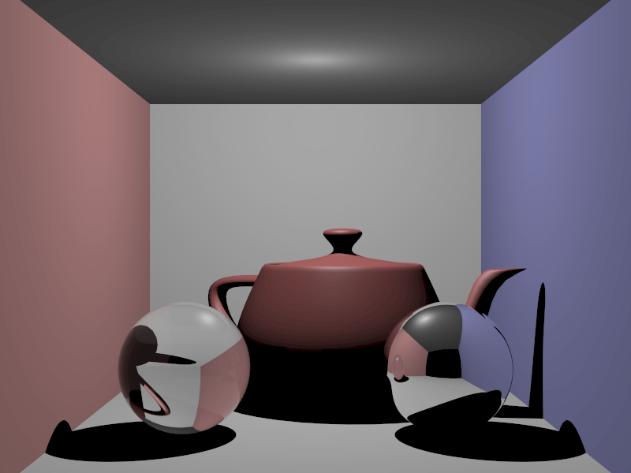
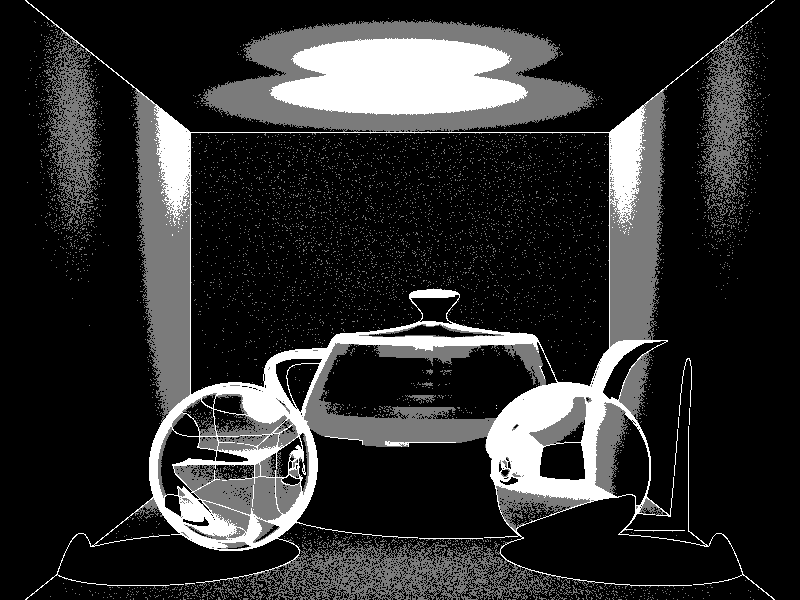
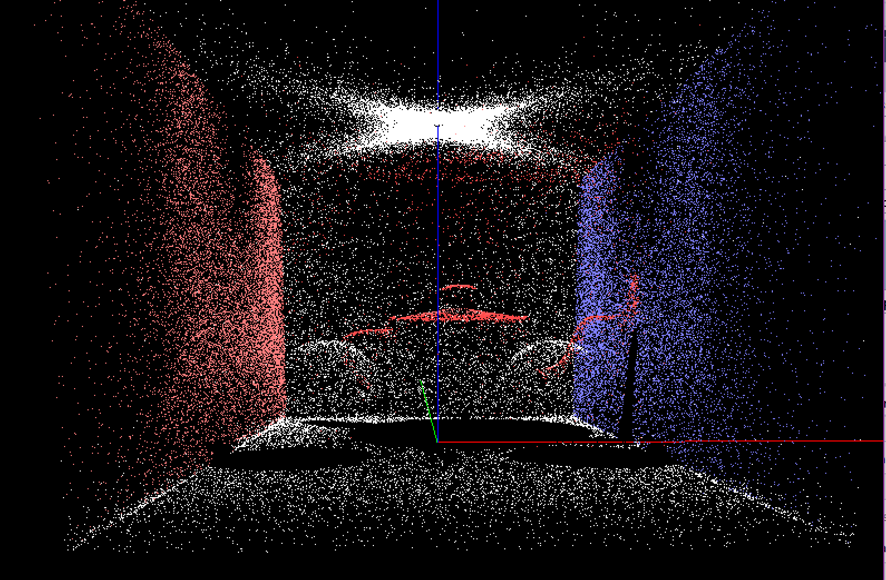

CS6620 - Ray Tracing for Graphics
Project 13 - Photon Mapping.
Results
Rendered in 2:33:13 with eight threads, four bounces, 100,000 photons, and 64, 128, or 196 samples.


Project Stumbling Blocks
My image does not seem to have any global illumination. When I look at my photon map, it doesn't look like there are
any blue photons other than on the wall and there are very few red photons.

I also have weird circles aroung my light and on my teapot. I was able to decrease their visibility with more samples,
but with fewer samples it looks like this:

I also had trouble with my stack size, but after increasing it to 3 MB I didn't have that problem anymore.
Machine Specs
Running Windows 10 on a Bootcamped MacBook Pro
| Processor |
Intel Core i7 2.50 GHz |
| RAM |
16GB 1600 MHz DDR3 |
| Graphics Card |
Intel Iris Pro 1536 MB |